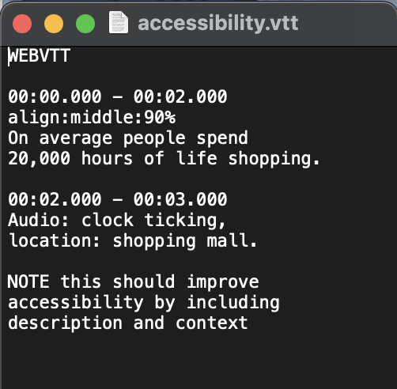
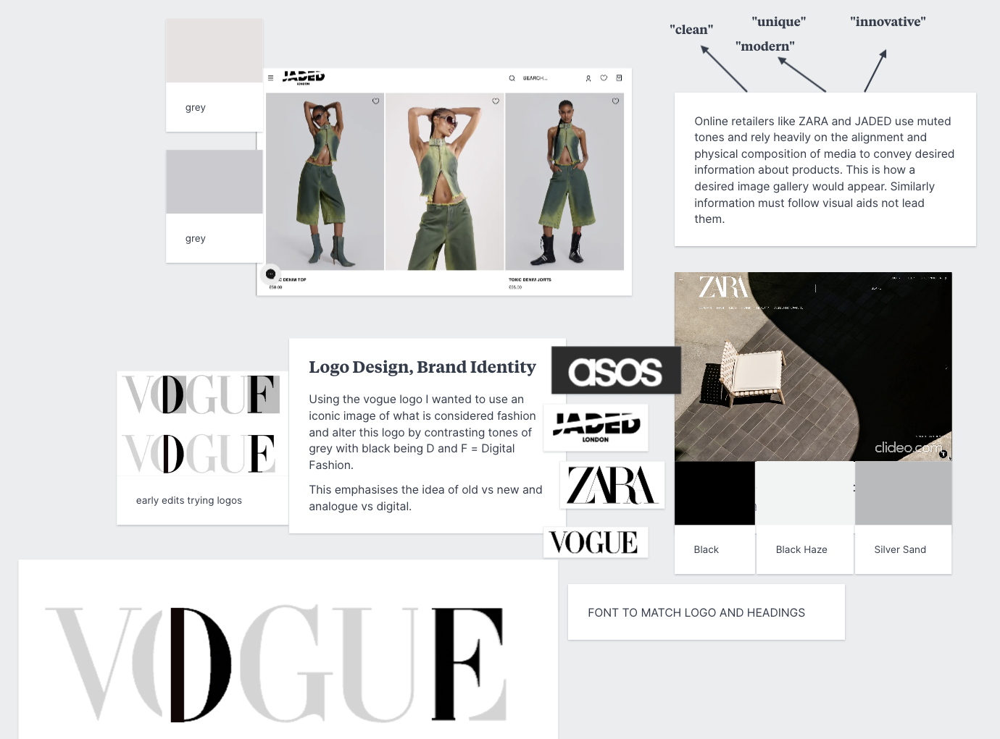
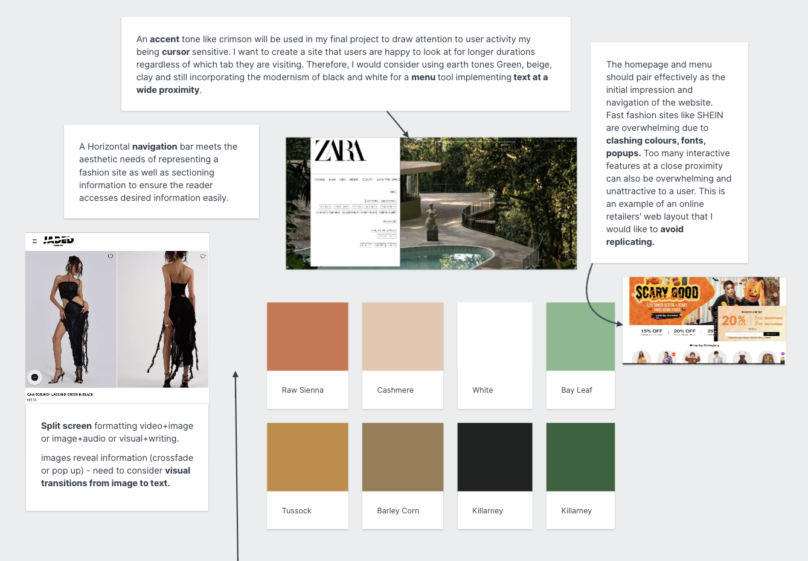
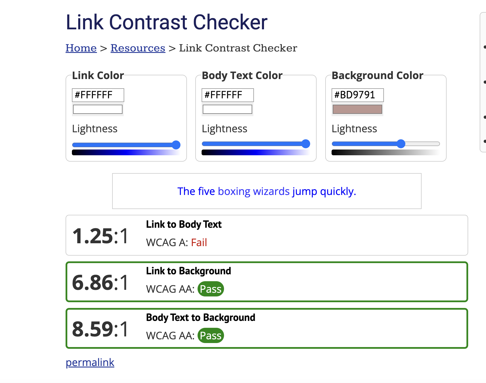
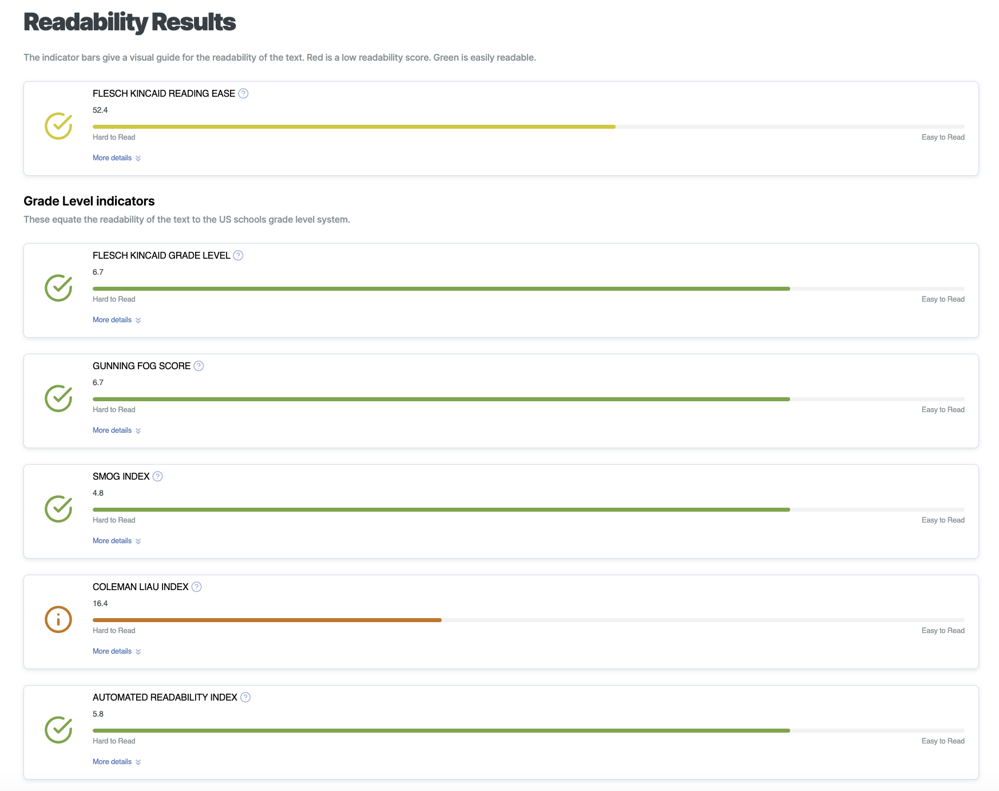
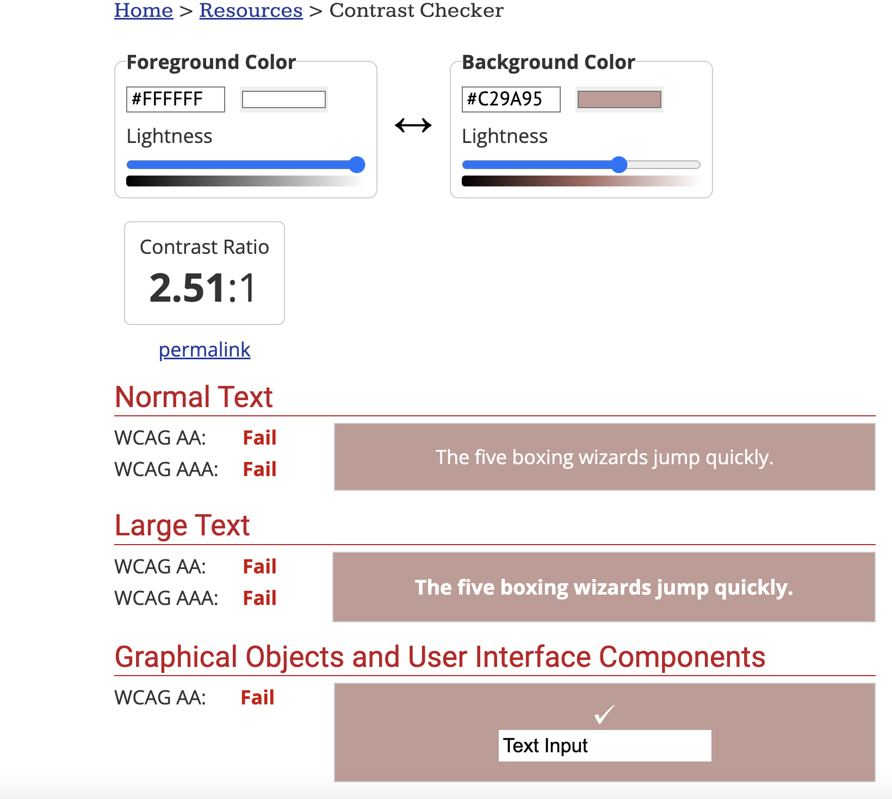

Content & Audience
Creating a mood board allowed me to distinguish pages my website needs to accommodate to the interests of the user:
A Main Page - what is digital fashion, description and introducing terminology
What is Digital Fashion - how is it changing the fashion industry?, EXAMPLES: streaming fashion online, social media and influencer culture.
What is Digital Fashion - how is it changing the creative economy? blockchain clothing, digitised transactions, digital innovating to physical creation.
Sustainability Page - sustainable manufacturing processes, the longevity of fashion pieces, what is fast fashion?
Avatar Building game - applying iconic gaming skins to an avatar reveals information about pieces - (reference to gaming origins and normalisation of digital fashion through building characters digitally).
Original Moodboard
Early planning stages of narrative, audience and site aesthetics.
MILANOTE MOODBOARD VERSION 1
Link Contrast checker
"In both links and body text must have at least 4.5:1 contrast with the background (3:1 for large text) to meet WCAG 2 Level AA."
Readability
"Coleman Liau and ARI rely on counting characters, words and sentence. The other indices consider number of syllables and complex words (polysyllabics - with 3 or more syllables) too. Opinions vary on which type are the most accurate. It is more difficult to automate the counting of syllable as the English language does not comply to strict standards."
Foreground & Background
"WCAG 2.0 level AA requires a contrast ratio of at least 4.5:1 for normal text and 3:1 for large text. WCAG 2.1 requires a contrast ratio of at least 3:1 for graphics and user interface components (such as form input borders). WCAG Level AAA requires a contrast ratio of at least 7:1 for normal text and 4.5:1 for large text."
Large text is defined as 14 point (typically 18.66px) and bold or larger, or 18 point (typically 24px) or larger.
Ultimately, by testing Twinbru design criteria it is concluded to keep contrasting colours to provide formating and keep data concise and informative to allow for different skill set access.
Using vtt. for captions

Original Moodboard
Creating user profiles highlighted how to accommodate my audience by structuring my webpage like online fashion retailers, websites like ZARA, JADED London and ASOS and evaluating web features to avoid using the SHEIN website (see final moodboard for examples: menu> development> moodboard). Key ideas used for building to develop the final concept were brand identity and web features and function.

Brand Identity

Web Features & Function
Accessibility
Accessibility is key componenet of any website as it determines the user capability to access information. To make information more accessible current folio pages exemplify a contrast of dark and light tones of text to highlight information. Aspects such as alignment and inclusion of multimedia could be improved
The following subheading include site analysis by Webaim Contrast Checker and Readability test tool, for 'Twinbru.com' previously referenced in Audio. WAVE Web Accessibility Evaluation Tool was not able to run the animations of twinbru and exemplified dysfunction.
Link Contrast checker

Readability

Foreground & Background

Video Captioning
As well as visual aesthetics to clarify information another way which accessibility can be implemented is through captioning. By captioning the final background video created on the video page this adds context to audio that may be unheard.